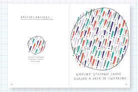

We build rock-solid, enterprise-grade software products and delightful digital experiences that make large quantities of data attractive, digestible, and actionable. We don’t simplify data, we allow users and readers to take in more information, enhancing their ability to connect the dots in highly complex data environments. Our work blends top-notch usability and museum-level art direction with insights from different disciplines, to turn data into visuals that power apps, websites, books, artwork, AR, physical and digital experiences.
Thanks to our hands-on expertise around visualization challenges and data-heavy projects, we have, over the past six years, developed and refined our own design methodology, which is based on four core principles: we embrace complexity. We pursue beauty. We don't rely on standards. We know data are not just numbers.
 You should follow Accurat on Twitter
here
You should follow Accurat on Twitter
here

She is a Partner at Pentagram in New York. After receiving her master’s degree in Architecture, she earned her
PhD in Design at Politecnico di Milano. In 2011, she co-founded Accurat, an internationally acclaimed
data-driven design firm with offices in Milan and New York. She is co-author of Dear Data and of the new interactive book Observe, Collect, Draw - A Visual
Journal. Giorgia is also a public speaker, her TED TALK on her humanistic approach to data has over one million views.
You should follow Giorgia on Twitter here.
He co-founded and runs Accurat, they do data+design.
He co-founded and runs Accurat, they do data+design. You should follow Gabriele Rossi on Twitter here.